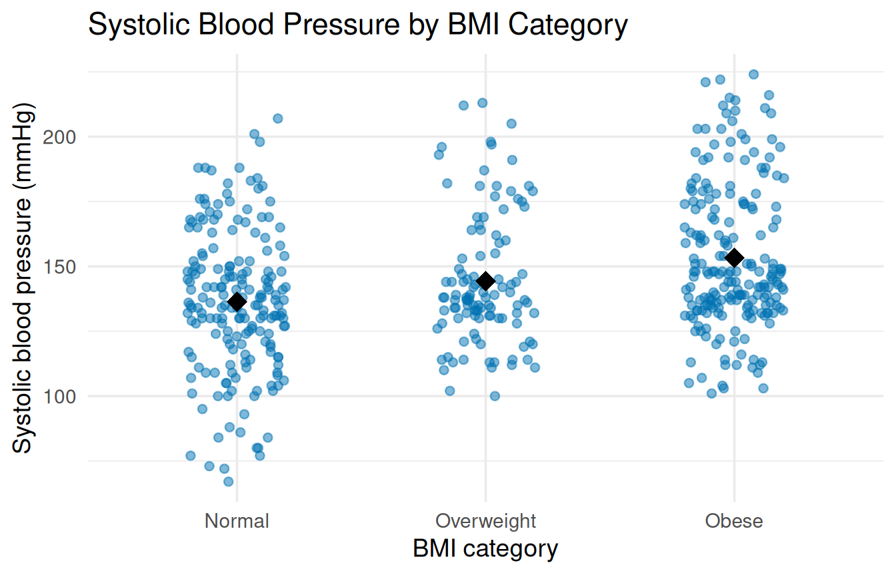
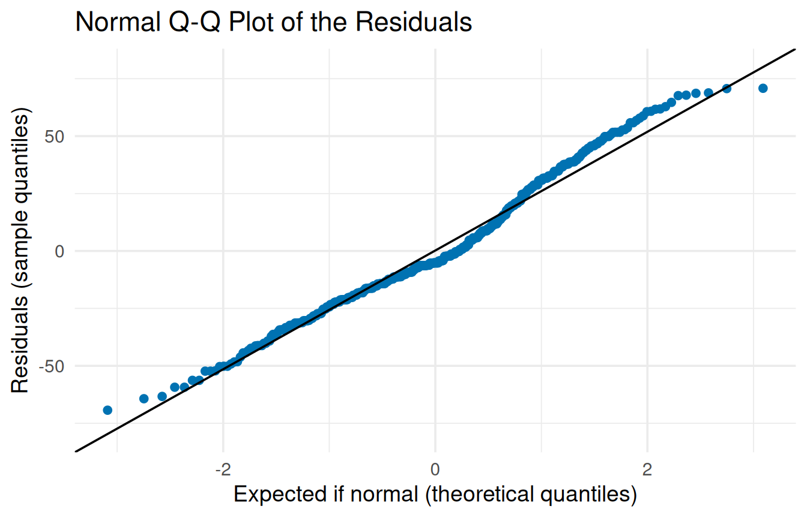

This chapter follows the one-way ANOVA from Chapter 6 of the textbook from start to finish: check the equal variances and normality assumptions, run the global ANOVA, then find which groups differ with Tukey’s HSD or Dunnett’s test and measure the size of a difference with Cohen’s d.
Download smoking_bmi_bp.csv into the same folder as the script. It holds blood pressure readings for 500 randomly selected U.S. adults. The question in this chapter: does systolic blood pressure differ across BMI categories?
The variables used in this chapter:
Variables from smoking_bmi_bp.csv used in this chapter
Variable
Type
What it records
SystolicBP
Numerical
The individual’s systolic blood pressure, measured in millimeters of mercury (mmHg).
BMI
Categorical
Body Mass Index weight classification category based on clinical ranges (Normal, Overweight, or Obese).
6.2 Load the packages and the data
This chapter uses three packages: ggplot2 for the graphs, emmeans for Dunnett’s test, and effectsize for Cohen’s d. If any is not installed yet, go back to Install and load packages in Getting Set Up.
# ggplot2 draws the graphs, emmeans runs Dunnett's test, and# effectsize calculates Cohen's d.library(ggplot2)library(emmeans)
Welcome to emmeans.
Caution: You lose important information if you filter this package's results.
See '? untidy'
library(effectsize)
NoteMessage: Welcome to emmeans
emmeans prints a welcome note when it loads. The message is normal, and you can ignore it.
# CHANGE THIS: the file name of your dataset, inside the quotes.pressure <-read.csv("smoking_bmi_bp.csv")names(pressure)
[1] "SystolicBP" "Smoker" "BMI"
NoteColumns named X, X.1, X.2, and so on
This file has six empty columns after the real ones, and R names them X through X.5. Files saved from spreadsheet programs often pick up empty columns like these. They hold nothing, and you can ignore them.
6.3 Put the groups in order
R lists groups in alphabetical order unless you tell it otherwise, which here would put Obese before Overweight. factor() with levels = sets the order used in every table and graph that follows:
# Put the groups in a sensible order. Without this, R uses# alphabetical order (Normal, Obese, Overweight).# factor(..., levels = c(...)) lists the groups in the order# you want, spelled exactly as in the data.# CHANGE THIS: your group variable (in both places) and your# groups, in orderpressure$BMI <-factor(pressure$BMI,levels =c("Normal", "Overweight", "Obese"))
[1] Normal <NA> Obese
Levels: Normal overweight Obese
What it means: any value not listed in levels = exactly as it is spelled in the data becomes NA. Here overweight is lowercase, so every Overweight person would drop out of the analysis.
How to fix it: copy each group name exactly from table() of your variable, and check the result with table() again afterward.
6.4 Check equal variances
Check equal variances with a rule of thumb and a picture: the 2X rule and a jitter plot. You may see formal tests for equal variances elsewhere; they tend to be overly sensitive, and using a hypothesis test to decide whether you may run a hypothesis test goes in a circle. Start with each group’s mean and standard deviation:
# 1. GROUP MEANS AND STANDARD DEVIATIONS, with tapply() from# Chapter 3. The standard deviations are stored as group_sds# so the next line can use them.# CHANGE THIS: your numerical variable and your group variabletapply(pressure$SystolicBP, pressure$BMI, mean)
Normal Overweight Obese
136.3155 144.3670 153.1814
Normal Overweight Obese
27.26852 25.07864 27.81397
# THE 2X RULE: the largest standard deviation divided by the# smallest. A result of 2 or less passes the check.max(group_sds) /min(group_sds)
[1] 1.10907
The largest standard deviation is only 1.11 times the smallest, well under 2, so the groups pass the 2X rule. (The means, 136.3, 144.4, and 153.2 mmHg, are what you report for each group.)
Then draw the jitter plot, with a black diamond at each group’s mean:
# 2. JITTER PLOT: one dot per person, nudged sideways so the dots# do not pile up.# geom_jitter(width = 0.2) spreads the dots 0.2 of a group's# width to each side. height = 0 keeps their values exact.# alpha = 0.5 makes the dots see-through, so overlaps show.# stat_summary(fun = mean, ...) adds each group's mean.# shape = 18 is a diamond; size = 5 makes it large.# set.seed() fixes the random sideways nudges, so the plot looks# the same every time you run it. Any whole number works.set.seed(2026)# CHANGE THIS: your group variable after x =, your numerical# variable after y =, and your labelsggplot(pressure, aes(x = BMI, y = SystolicBP)) +geom_jitter(width =0.2, height =0, alpha =0.5,color ="#0072B2") +stat_summary(fun = mean, geom ="point", shape =18, size =5,color ="black") +labs(title ="Systolic Blood Pressure by BMI Category",x ="BMI category",y ="Systolic blood pressure (mmHg)") +theme_minimal(base_size =14)

Jitter plot of systolic blood pressure by BMI category, with group means marked by diamonds.
The dots spread about the same distance from top to bottom in all three groups, which supports the equal variances assumption.
TipWith your own data
Change the numerical variable and the group variable in the tapply() lines and the plot, and update the labels. set.seed() only makes the random sideways nudges repeatable; you can keep any number there.
6.5 The global ANOVA
aov() (short for “analysis of variance”) is written like lm(): the numerical variable before the ~, the group variable after it.
# 3. ONE-WAY ANOVA: aov() is written like lm(), with the# numerical variable before the ~ and the group variable after.# CHANGE THIS: your numerical variable, your group variable, your# dataset, and a name for your modelbp_model <-aov(SystolicBP ~ BMI, data = pressure)summary(bp_model)
Df Sum Sq Mean Sq F value Pr(>F)
BMI 2 27801 13900 19.02 1.1e-08 ***
Residuals 497 363274 731
---
Signif. codes: 0 '***' 0.001 '**' 0.01 '*' 0.05 '.' 0.1 ' ' 1
The BMI row holds the values to report:
Where each value appears in the ANOVA table
What you report
Where it is in the output
In this example
Between-groups degrees of freedom
BMI row, Df column
2
Within-groups degrees of freedom
Residuals row, Df column
497
\(F\) statistic
BMI row, F value column
19.02
p-value
BMI row, Pr(>F) column
below .001 (1.1e-08)
So \(F(2, 497) = 19.02\), p < .001: at least one BMI category has a different mean systolic blood pressure. As the textbook stresses, this does not say which ones; that is the job of the post hoc tests below.
NoteCheck: Df of 1 for the groups
If the group variable’s row shows Df of 1 when you have three or more groups, R treated your groups as a number. This happens when groups are stored as codes such as 1, 2, and 3. Wrap the variable in factor() (as in Put the groups in order) and run aov() again. The between-groups degrees of freedom should be the number of groups minus 1.
6.6 Check normality: Q-Q plot
Store the model’s residuals as a new column, as in Chapter 4, and draw a normal Q-Q plot:
# 4. NORMAL Q-Q PLOT of the residuals.# Store the residuals as a new column, as in Chapter 4.# aes(sample = residual) tells ggplot which values to check.# stat_qq() draws the dots; stat_qq_line() draws the# reference line.# CHANGE THIS: your dataset name and your model namepressure$residual <-resid(bp_model)ggplot(pressure, aes(sample = residual)) +stat_qq(color ="#0072B2") +stat_qq_line() +labs(title ="Normal Q-Q Plot of the Residuals",x ="Expected if normal (theoretical quantiles)",y ="Residuals (sample quantiles)") +theme_minimal(base_size =14)

Normal Q-Q plot of the ANOVA residuals.
The dots follow the reference line closely, bending only slightly at the ends, so the residuals are reasonably normal. What would fail this check, as the textbook describes, is dots that pull sharply away from the line in a hook at one or both ends.
TipWith your own data
Change the dataset name and the model name in the first line. The plot code itself does not change.
6.7 Tukey’s HSD
Tukey’s HSD compares every pair of groups and adjusts the p-values for the number of comparisons:
# 5. TUKEY'S HSD: compares every pair of groups.# CHANGE THIS: your model nameTukeyHSD(bp_model)
Tukey multiple comparisons of means
95% family-wise confidence level
Fit: aov(formula = SystolicBP ~ BMI, data = pressure)
$BMI
diff lwr upr p adj
Overweight-Normal 8.051464 0.3927115 15.71022 0.0366867
Obese-Normal 16.865865 10.4316024 23.30013 0.0000000
Obese-Overweight 8.814400 1.2740746 16.35473 0.0170703
Each row is one pair. diff is the difference in means (the first group named minus the second), lwr and upr are the ends of its 95% confidence interval, and p adj is the adjusted p-value. All three pairs differ significantly. For example, the Obese group’s mean is 16.87 mmHg higher than the Normal group’s, 95% CI [10.43, 23.30].
NoteA p adj of 0.0000000
R rounds the p-value to seven decimal places, so 0.0000000 means it is smaller than 0.00000005, not exactly zero. Report it as p < .001.
6.8 Dunnett’s test
When one group is a control (here, Normal BMI), Dunnett’s test compares each other group to it and skips the rest. It comes from the emmeans package:
# 6. DUNNETT'S test: compares each group only to the control.# emmeans(model, "BMI") calculates each group's mean from the# model. The name in quotes is your group variable.# method = "trt.vs.ctrl" means "each treatment versus the# control".# ref = 1 makes the first group in your order (here, Normal)# the control.# CHANGE THIS: your model name and your group variable; set the# order of your groups so the control comes firstgroup_means <-emmeans(bp_model, "BMI")dunnett <-contrast(group_means, method ="trt.vs.ctrl", ref =1)dunnett
contrast estimate SE df t.ratio p.value
Overweight - Normal 8.05 3.26 497 2.471 0.0266
Obese - Normal 16.87 2.74 497 6.162 <0.0001
P value adjustment: dunnettx method for 2 tests
confint(dunnett)
contrast estimate SE df lower.CL upper.CL
Overweight - Normal 8.05 3.26 497 0.792 15.3
Obese - Normal 16.87 2.74 497 10.767 23.0
Confidence level used: 0.95
Conf-level adjustment: dunnettx method for 2 estimates
The first table gives the differences and p-values; confint() adds their 95% confidence intervals. Both groups have significantly higher blood pressure than the Normal group: Overweight by 8.05 mmHg (p = .027) and Obese by 16.87 mmHg (p < .001).
TipWith your own data
Change the model name and the group variable inside emmeans(). ref = 1 means the first group in your order is the control, so put your control group first when you set the order with factor().
6.9 Cohen’s d for a pair of groups
For practical significance, calculate Cohen’s d for a pair the post hoc test found significant. Keep just those two groups with subset() and %in%, then use cohens_d() from Chapter 3:
# 7. COHEN'S d for one pair of groups, as in Chapter 3.# %in% c(...) keeps the rows whose group is one of the two# named, so the test sees only that pair.# CHANGE THIS: your variables, your dataset, and the two groupscohens_d(SystolicBP ~ BMI,data =subset(pressure, BMI %in%c("Normal", "Obese")))
Cohen's d | 95% CI
--------------------------
-0.61 | [-0.81, -0.41]
- Estimated using pooled SD.
The difference between the Normal and Obese groups is \(d = 0.61\) (ignore the minus sign, which only reflects the order of the groups): a medium effect.
TipWith your own data
Change the variables, the dataset, and the two group names inside c(). Repeat the line once for each pair you need.